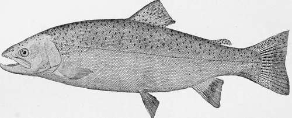

The Pacific Salmon. Part 7
Description
This section is from the book "American Game Fishes", by W. A. Perry. Also available from Amazon: American Game Fishes: Their Habits, Habitat, and Peculiarities; How, When, and Where to Angle for Them.
The Pacific Salmon. Part 7
"Get out!" said the angler, and he turns his canoe abruptly from the tawny villain, who had kissed the Chinook blarney-stone, and is soon engaged in royal battle with a Kisutch. Nor does this fight last long, for the regal fish is soon gasping in the bottom of the canoe. This is repeated often before the report of a rifle comes sharply over the water from the tent, summoning the angler to breakfast. Soon, with long, swinging strokes of his paddle, he reaches the beach near the tent, springs ashore, and draws his canoe up on the beach. The fish are unloaded and counted, and he finds he has caught eighteen Salmon that will average sixteen pounds each.
After breakfast he takes a hatchet and breaks up the dark-looking objects that he dug up in the sand the night before, which prove to be mussels, and scours the flesh white with sea-water and sand. Using these for a lure on his rude spoon, before noon he succeeds in catching twenty-four more Salmon. When the steamer calls for him the following evening, he has at least half a ton of Salmon carried on board.
Think of it! O ye anglers who pay an exorbitant license to fish in the mosquito-haunted rivers of Canada! Here one man in two days has caught more Salmon (and he does not consider himself an expert angler) than you could have caught in a Canadian river in a whole season. Then remember that directly west, where the Northern Pacific, or the Union Pacific, or the Canadian Pacific Railway may land you in four days, lies a region that for beauty of scenery, for mildness of climate, and for absence of insect plagues, the world can never equal. Leave the insect-haunted rivers for old fogies, and seek an outing in the summer-land of sunset, and you will always bless the day you did so, and the man who advised you thus.
You need not copy the rude methods of the man to whom I have introduced you. You may, if you will (but I do not advise it), bring with you your light, split-bamboo fly rod, your neatly turned Skinner or Buell spoon, your fifteen-thread Cuttyhunk line, and your Kentucky reel, and may enjoy the sport to your cultivated taste.
True, our Salmon do not take the fly, but they are as gamy when hooked as your Canadian Salmon; our waters are as clear as your Canadian waters; our skies as bright as your
Steel Head-Salmo Guirdneri.
Canadian skies, and the labor of angling here is as nothing compared to that of climbing over logs and bowlders, and tramping through jungles on your Canadian rivers.
For thirteen seasons has the engineer caught the lordly Salmon after the ancient and honorable manner of the Puy-allups, the Dwuamishes, and the Lummies; which manner consists of attaching a chalk-line to a spoon cut out of a piece of tin, connected with a swivel. In connection with this outfit is a stout club with which the sportsman batters in the skulls of his victims. This is a very killing combination.
Some kind individual, with malice aforethought, on the publication of my Salmon-fishing sketch a year ago, sent me an anonymous present of a fishing-rod, with reel and line attached. It was a very pretty rod, and bore the name of a popular eastern manufacturer. I felt proud of it, and exhibited it to all my sportsmen friends. But alas! it is gone, and should any brother sportsman in Alaska or Norway catch a Tyee Salmon with this rod in tow, he will confer a favor by returning it C. O. D. to Silalicum, Seattle, Washington, and he may keep the fish.
The engineer will now proceed to unfold the growing horror of his tale. He will unveil the dire accident that caused him to lose his beautiful rod, and made him an object of mirth and ridicule to some hundreds of cosmopolitans who witnessed his degradation, and giggled, screamed, and chattered at his shame.
The new-born day had dawned clear and fair. A breath of balm, wafted from fir and cedar forests, was in the air, and a low north wind bore with it the fresh salt scent of the sea. The stars were dying in the blue, and far across the snow-crowned mountains in the east smiled the crimson blush of morning. A dreamy stillness lay over the earth, sleep ruled everywhere, and the bustling city lay wrapped in a dream of calm.
With rod in hand the engineer sought the boat-house, and a short time later was gliding noiselessly over the water in his Hyda canoe. Under wharves, among a fleet of all kinds of smaller crafts, he pursued his noiseless way, until he reached the city front. Then, threading among ships and steamers, riding peacefully at anchor, he at last found himself alone on the bosom of the bay. When at sufficient distance from the shore he jointed his rod and attached a spoon of his own construction to the line. Reeling off one hundred and sixty feet of line, he knelt in the bottom of the canoe, holding the rod between his knees, and began to paddle swiftly across the bay.
The Hyda canoe is a craft peculiar to the northwest coast. Formed out of a log of cedar by slow and diligent chopping with a crude adze in the hands of an Indian it becomes a thing of shape, balance, and beauty, that a white man can never successfully imitate. Superstition ever being prominent in the savage mind, the prows of these canoes are always shaped into one of the totems by which the different families of their tribes are designated-either the bear, the raven, or the wolf. The canoe that carried the engineer this fateful morning was about fifteen feet long and twenty inches beam. It was gayly decorated at the prow* with a wolf-head that possessed two large, glaring eyes of an exceedingly yellow color.
Evidently the Salmon were not hungry. The engineer paddled half-way across the bay, but the savage rush that tells that the Tyee is there was not telegraphed along the line. Other boats now-joined him, and four great scows loaded with nets and Italians came creeping out from shore and anchored in the middle of the bay, about a quarter of a mile apart. Then the boats that had towed the scows out began to spread the nets, forming a half-circle around the scows, perhaps two hundred yards in extent. The foreign ruffians were evidently happy, for, as they spread their nets, they sang a song very much like this:
Continue to: